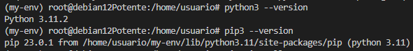

1. Actualizar el sistema
Es importante asegurarte de que tu sistema esté actualizado antes de instalar nuevos paquetes.
sudo apt update
2. Instalar Python
Verificar si Python ya está instalado
Ejecuta el siguiente comando para comprobar si Python ya está instalado:
python3 --version
Si Python no está instalado, sigue estos pasos:
Instalar Python 3
-
Instala Python 3 y sus herramientas:
sudo apt install -y python3 python3-pip python3-venv

-
Verifica la instalación:
python3 --version pip3 --version

3. Instalar MkDocs
Usar pip para instalar MkDocs
-
Asegúrate de que
pipesté actualizado:pip3 install --upgrade pip -
Instala MkDocs:
pip3 install mkdocs

-
Verificamos varias la instalación:
mkdocs --version

4. Configuración inicial de MkDocs
Crear un proyecto base de MkDocs
-
Crea un nuevo proyecto:
mkdocs new my_project (Le ponemos el nombre que queramos)

-
Cambia al directorio del proyecto:
cd my_project -
Inicia el servidor de desarrollo de MkDocs:
mkdocs serve 0.0.0.0:8000

- Abre tu navegador y accede a
http://127.0.0.1:8000para ver tu sitio.